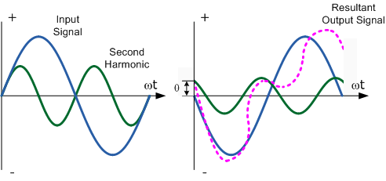
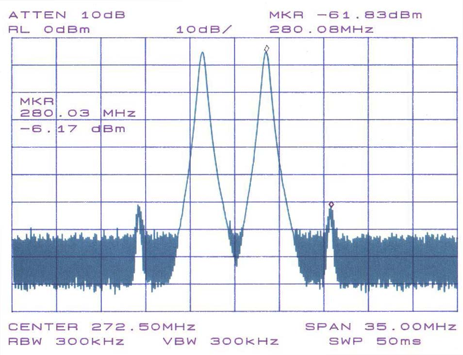

https://es.wikipedia.org/wiki/Perturbaciones_en_una_transmisi%C3%B3n para más detalle
- Atenuación
- Distorsión de retardo 
- Ruido

Dibujo de un espectro que muestra la intermodulación entre dos señales de 270 y 275 MHZ (los picos grandes). Se producen intermodulaciones visibles como pequeños picos en 280 MHz y 265 MHz.